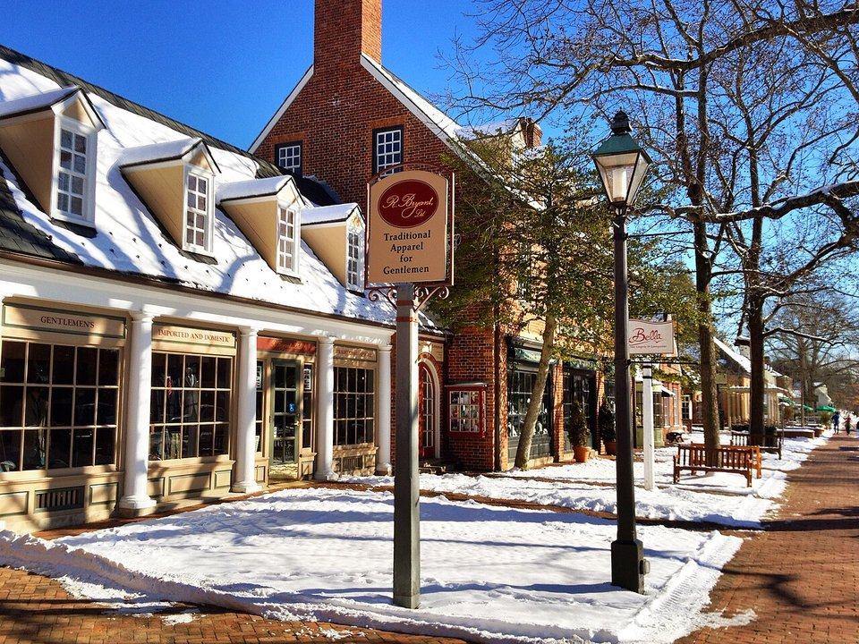

Historic area · Luxury hotel
Williamsburg Inn
Colonial Williamsburg’s grand 1937 hotel, steps from the historic area.
Official details for Williamsburg InnAmerica’s colonial capital, by small airplane.
Williamsburg was Virginia’s colonial capital, and its restored historic area is the largest living-history museum in the country, with taverns, tradesmen and the Governor’s Palace. Land at Williamsburg-Jamestown’s small executive airport and have lunch at Charly’s on the field, stay at the Williamsburg Inn or Kingsmill Resort on the James River, walk Duke of Gloucester Street, and spend a day at Historic Jamestowne and Yorktown along the Colonial Parkway.

Time illustration: direct distance at 150 KTAS plus 15 minutes for departure and arrival, matching the discovery page. Use ForeFlight for your actual flight plan.
Check the weekend weather at both ends → Flight category, your minimums and the crosswind on the best runway.
KJGG, Waltrip Williamsburg Executive, is a non-towered airport at 49 feet with a 3,204-foot runway, about 10 minutes from the historic area. Charly’s restaurant is on the field.
Williamsburg Executive Airport, Williamsburg, VA
Short, narrow runway with trees nearby; check performance. Newport News/Williamsburg (KPHF, with Rick Aviation and Atlantic Aviation) has long runways 20 minutes away. Restricted and military airspace surrounds the area; brief carefully. No live fuel price is shown.
Mid-Atlantic flying: summer haze and afternoon thunderstorms, morning fog near the water, busy military and airline airspace around Norfolk and Washington, and winter icing. About 240 nm from Myrtle Beach.
Rates and availability need travel dates. Spring, fall and December weekends book early.
Colonial Williamsburg’s grand 1937 hotel, steps from the historic area.
Official details for Williamsburg InnA riverfront resort with golf, a spa and a marina.
Official details for Kingsmill ResortHotels and inns in Williamsburg.
Visit Williamsburg for More places to stayPrices and availability for your dates, through our partner Stay22. This is an affiliate link: we may earn a commission at no cost to you. The picks above are never paid.
Reserve weekend dinners.
Lunch overlooking the runway; dinner and live music on summer Fridays.
Official details for Charly’s Airport RestaurantWilliamsburg’s special-occasion restaurant in Merchants Square.
Official details for The Fat CanaryFrench bistro cooking near the historic area.
Official details for Blue Talon BistroTaverns and restaurants in Williamsburg.
Visit Williamsburg for More restaurantsA Colonial Williamsburg pass covers the trade shops and historic buildings.
The restored colonial capital, with trades, taverns and the Governor’s Palace.
Colonial WilliamsburgThe site of the 1607 English settlement, with active archaeology.
Historic JamestowneLiving-history museums of Jamestown and the American Revolution.
Jamestown-Yorktown FoundationThis prototype links to the local visitor site. It does not yet match events to your travel dates.
Colonial Williamsburg’s holiday season.
Colonial Williamsburg for Grand IlluminationGardens in bloom and mild weather.
Visit Williamsburg for SpringCooler days for walking.
Visit Williamsburg for FallCheck the local calendar when choosing a weekend, and confirm dates and tickets with the organizer.
A sample Williamsburg weekend. No bookings or availability confirmed.
Land at KJGG mid-morning.
Lunch at Charly’s on the field.
A short walk, then back to the airport.
Land at KJGG, subject to weather and your actual flight plan.
Lunch at Charly’s, then the historic area.
Dinner at The Fat Canary.
Historic Jamestowne.
Colonial Parkway to Yorktown.
Dinner at Blue Talon Bistro.
Coffee in Merchants Square.
Check takeoff performance for the short runway.
Afternoon thunderstorms are common in summer; leave in the morning.
Colonial Williamsburg.
Explore.
Dinner in town.
This guide is part of a multi-stop flying trip. Set your dates and aircraft, then swap stops to make it your own.
These details make the difference between an appealing list and a usable getaway.
Hotel, then a Colonial Williamsburg pass.
About 240 nm from Myrtle Beach.
3,204 feet; use KPHF if you need more.
April to June, September to December.
Picks and links reviewed by WingAway Weekends. Hours, prices, menus and availability change often, so confirm directly with each place before booking. Spotted something out of date, or have a favorite we missed? Email us at hello@wingawayweekends.com.
WingAway Weekends helps you discover the destination. Use ForeFlight and current official aviation information for route, performance, weather, NOTAMs and preflight decisions. Flight planning and PIC responsibility stay with the pilot.
One fly-in weekend, a Fly to Lunch pick and the newest guides, about once a month.
Free. Unsubscribe anytime.